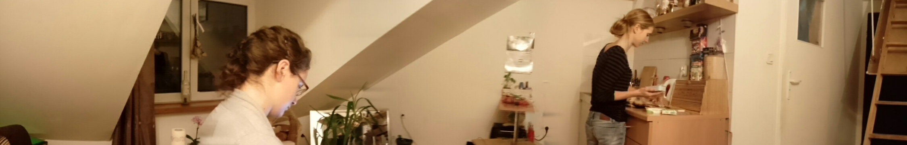

ZESPÓŁ
Justyna Kmieć
Pegagog, psychoterapeuta w trakcie przygotowań do uzyskania Certyfikatu Polskiego Towarzystwa Psychologicznego w Krakowskim Centrum Psychodynamicznym, Ukończyła szkolenie z zakresu psychoterapii dzieci „Setting w pudełku” oraz kurs „Diagnoza i psychoterapia patologicznych hazardzistów” realizowane przez Krakowskie Stowarzyszenie Terapeutów Uzależnień. Należy do Polskiego Towarzystwa Psychoterapii Psychodynamicznej. Swoją pracę poddaje regularnej superwizji u certyfikowanych superwizorów PTP. Doświadczenie w pracy terapeutycznej zdobywa realizując staże m. in w Zakładzie Psychoterapii Collegium Medicum Uniwersytetu Jagiellońskiego i Krakowskim Instytucie Psychoterapii. a także w pracy w Ośrodku Poradnictwa i Terapii Rodzin i Poradni Psychoterapii Dzieci i Młodzieży. Posiada kilkuletnie doświadczenie w pracy indywidualnej i grupowej z dziećmi w wieku przedszkolnym, wczesnoszkolnym gimnazjalnym a także z młodzieżą licealną, zdobyte w ramach pracy w ośrodku opiekuńczo-wychowawczym i poradni psychoterapii dzieci i młodzieży. W swojej pracy terapeutycznej odwołuje się do reguł „Aksjologii Psychoterapeuty Psychodynmicznego”
OFERTA
Oferujemy pomoc psychoterapeutyczną dla osób dorosłych i młodzieży.
Psychoterapia indywidualną dla osób dorosłych doświadczających:
Psychoterapia indywidualna dla młodzieży przejawiającej:
PSYCHOTERAPIA:
Oferujemy psychoterapię indywidualną dorosłych i młodzieży. Pracę prowadzimy w nurcie psychodynamicznym. Psychoterapia psychodynamiczna toczy się w oparciu o relację terapeutyczną czyli więź, jaka rozwija się pomiędzy pacjentem a terapeutą w trakcie trwania leczenia. Praca terapeutyczna polega na dostarczaniu nowego rozumienia rzeczywistości wewnętrznej i zewnętrznej oraz umożliwienie przeżycia doświadczenia interpersonalnego w relacji terapeutycznej, które stanowi bazę do wprowadzania korzystnych zmian w funkcjonowaniu psychicznym i społecznym. Sesje terapeutyczne odbywają się raz lub dwa razy w tygodniu i trwają 45 - 50 minut. Forma psychoterapii i techniki pracy psychoterapeutycznej są dostosowane do indywidualnych potrzeb, problematyki i możliwości pacjenta.